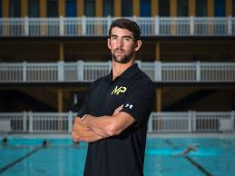
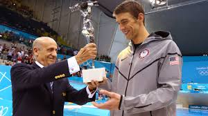

Michael phelps
Michael Fred Phelps II is an American former competitive swimmer and the most successful and most decorated Olympian of all time, with a total of 28 medals. Phelps also holds the all-time records for Olympic gold medals, Olympic gold medals in individual events, and Olympic medals in individual events.



Work
Swimming is an individual or team racing sport that requires the use of one's entire body to move through water. The sport takes place in pools or open water (e.g., in a sea or lake). Competitive swimming is one of the most popular Olympic sports,[1] with varied distance events in butterfly, backstroke, breaststroke, freestyle, and individual medley. In addition to these individual events, four swimmers can take part in either a freestyle or medley relay. A medley relay consists of four swimmers who will each swim a different stroke, ordered as backstroke, breaststroke, butterfly and freestyle.[2]
My favourite hobby is swimming and it is the most famous in Australlia. Swimming builds strength because water affords twelve times the resistance of air, and it does so in every direction.
>